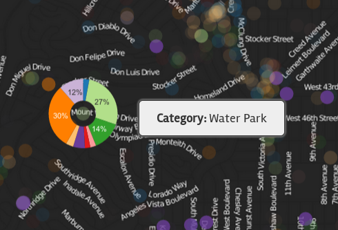

POI PULSE

POI (Point of Interest) Pulse is an interactive application that shows the pulse of user behavior in the Greater Los Angeles area. Visualized through interaction with approximately 170,000 points of interest (e.g., Bars, Hospitals, Parks) rendered through over 12 million tiles, the map displays both typical activities patterns in the region as well as real-time social behavior.
After closing this dialog, you will be presented with a map of the Greater Los Angeles area showing all POI styled with white markers. The opacity of the markers indicates the typical level of activity that occurs at this type of POI at the stated time of the day/week. Advancing through time (NEXT HOUR) gives a good introduction to the flow of the city as a whole.
Zooming in, the POI are split in to ten colored categories. The opacity of the markers at this level shows the difference in activity between categories. For example, the category of Entertainment and Nightlife is very prominent on Saturday night while it is completely overshadowed by Commercial Services on Monday at 9am.
 Zooming in even further, the data format switches from image to vector tiles. Hovering your mouse over any POI at this level displays the category as well as a donut chart surrounding the marker. This donut chart is a technique employed to visually explain the category probabilities of each POI. The standard visualization forces each POI to be assigned a single color representing a single category, but in actuality, the POI may exhibit high probabilities in more than one category.
Lastly, clicking the BURST MODE button (enabled at a high zoom level) shows real-time Tweets. Additionally, the current check-in counts are requested for all Foursquare venues that approximate POI in the vicinity.
Take some time to explore the map!